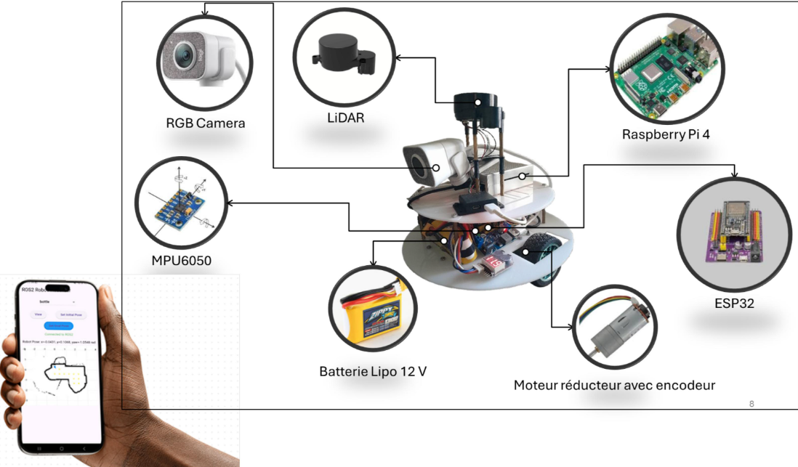
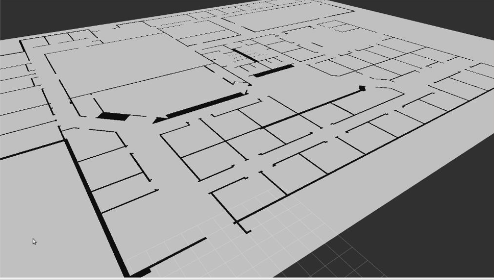
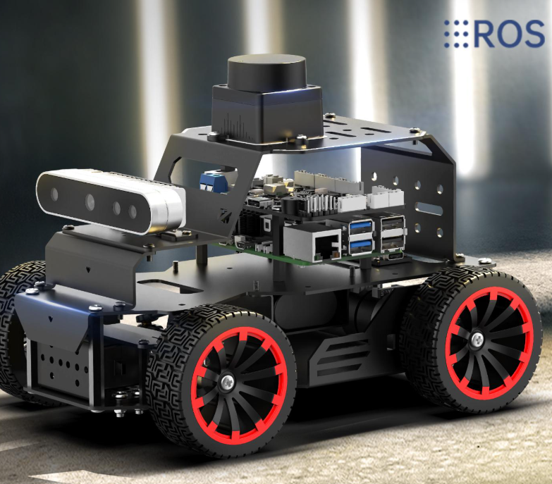
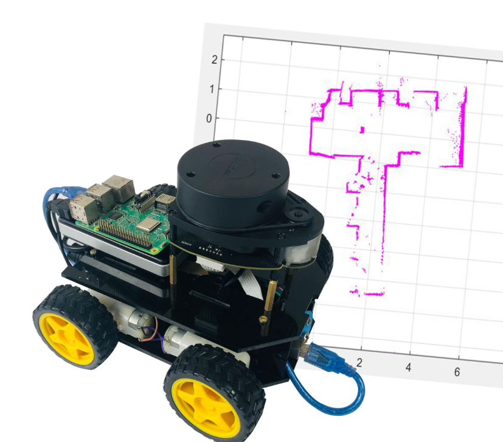

2D Room Mapping
Scan walls and obstacles to create an indoor occupancy map.
VJAYA ROBOTICS PROJECT
RASPBERRY PI ROBOTICS PROJECTBuild an autonomous indoor mapping robot using Raspberry Pi, 2D LiDAR, wheel encoders and ROS 2. The robot scans its surroundings, creates a 2D map and navigates between selected locations.
Explore ProjectPROJECT OVERVIEW
This Indoor Mapping Robot uses a Raspberry Pi as its main computer. A 2D LiDAR sensor scans the surrounding environment and measures the distance to nearby walls and obstacles.
Wheel encoders provide movement information to estimate the robot's position. SLAM software combines the sensor data and movement information to create a 2D map of the indoor environment.
After creating a map, the robot can use localization and navigation software to estimate its position and travel toward a selected destination.




WHAT IT CAN DO
Scan walls and obstacles to create an indoor occupancy map.
Estimate the robot's position and orientation on the saved map.
Plan a route between the starting position and a selected destination.
Use LiDAR scan data to detect nearby walls and obstacles.
Follow a planned route using compatible ROS 2 navigation software.
Save the created map and use it for future navigation sessions.
HARDWARE REQUIREMENTS
SOFTWARE REQUIREMENTS
The robot software is organized into separate files for configuration, LiDAR communication, motor control, encoders, odometry, mapping and navigation.
HOW IT WORKS
HARDWARE CONNECTIONS
| Component | Component Pin | Raspberry Pi Connection |
|---|---|---|
| 2D LiDAR | USB | Raspberry Pi USB port |
| 2D LiDAR | UART TX | Configured serial RX |
| 2D LiDAR | UART RX | Configured serial TX |
| Motor Driver | Motor A output | Left DC motor |
| Motor Driver | Motor B output | Right DC motor |
| Left Encoder | A / B signals | Configured GPIO inputs |
| Right Encoder | A / B signals | Configured GPIO inputs |
| Motor Driver | Logic control | Configured GPIO pins |
PROGRAM STRUCTURE
Main application and robot startup.
Robot settings, ports and configuration values.
LiDAR communication and scan data.
Motor driver control and movement commands.
Read wheel encoder signals.
Calculate robot movement and position.
SLAM mapping configuration.
Navigation goals and route following.
PROGRAMMING
Download the Indoor Mapping Robot project files.
main.py
Download Code ↓ 📄config.py
Download Code ↓ 📄lidar_node.py
Download Code ↓ 📄motor_controller.py
Download Code ↓ 📄odometry.py
Download Code ↓ 📄mapping.py
Download Code ↓ 📄navigation.py
Download Code ↓PROJECT DEMONSTRATION
Indoor Mapping Robot Demonstration
Add your actual robot photograph or mapping demonstration video here.IMPORTANT INFORMATION